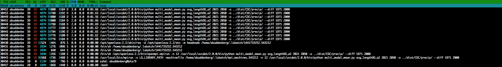

Andrew Buddenberg
Adventures in software engineering @ CICS-NC
Essential Climate Variable Inventories
Otis asked me to create a database of some survey results for John Bates...Essential Climate Variable Inventories
do some analysis...Essential Climate Variable Inventories
...and present the results at the CDR meeting.

Essential Climate Variable Inventories
And I decided to try something new in the processHigh Performance Computing
You may have noticed that the cluster's been a little unstable lately...
High Performance Computing
Concurrent file access bottleneck in StorNext...
High Performance Computing
Race condition in OpenLava 2.2 MPI job allocationMetadata
Released gcis-py-client 1.1...
Metadata
...and used it to good effect for the health assessmentMetadata
GDAS also coming along nicelySharepoint and MS Office
If we're stuck writing papers in Word, let's do it properly- Real-time collaboration (like Google Docs)
- Version control built in
- Workflow support
- File locking

Sharepoint and MS Office
Sharepoint and MS Office
Office 2011 corrupts documents in Sharepoint...Sharepoint and MS Office
...and Office 2016 is annoying:wq